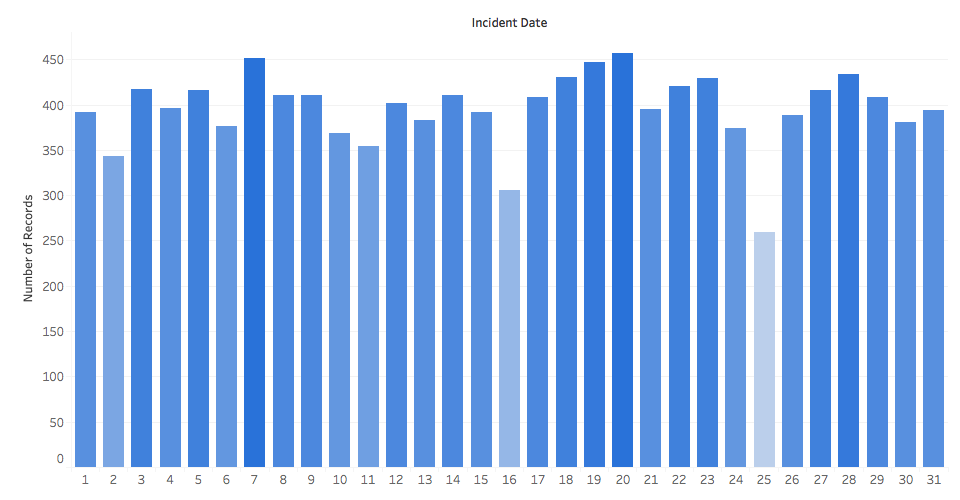

My Name: Neal Siegrist
This visualization is representing the number of crimes that occured on each day for December 2018. Christmas (Dec 25) stands out with the abnormal amount of low crime. This visualization uses colors to amplify the intensity for the larger data bars and shows lighter colors for lower data points.
This visualization represents the number of incidents that occured on each day during the month of December 2018 in San Francisco, California. One noticeable outlier from the data is the low number of crimes on Christmas (Dec 25).
If appropriate, provide a brief discussion of the primary goal and findings of the visualization, any challenges encountered creating the visualization, and any other context as required by the assignment.
If appropriate, provide credit for the dataset, any code used, and design inspirations here. Unsufficient discussion here is a violation of the academic honesty policy and may result in an F grade for the assignment or the entire course.
This visualization represents the number of incidents that occured on each day during the month of December 2018 in San Francisco, California. One noticeable outlier from the data is the low number of crimes on Christmas (Dec 25).
If appropriate, provide a brief discussion of the primary goal and findings of the visualization, any challenges encountered creating the visualization, and any other context as required by the assignment.
If appropriate, provide credit for the dataset, any code used, and design inspirations here. Unsufficient discussion here is a violation of the academic honesty policy and may result in an F grade for the assignment or the entire course.
This visualization represents the number of incidents that occured on each day during the month of December 2018 in San Francisco, California. One noticeable outlier from the data is the low number of crimes on Christmas (Dec 25).
If appropriate, provide a brief discussion of the primary goal and findings of the visualization, any challenges encountered creating the visualization, and any other context as required by the assignment.
If appropriate, provide credit for the dataset, any code used, and design inspirations here. Unsufficient discussion here is a violation of the academic honesty policy and may result in an F grade for the assignment or the entire course.
| Done? | Letter | Justification |
|---|---|---|
| D | If appropriate, provide a brief justification for this level of functionality. Clearly state if this level was not implemented. | |
| C | If appropriate, provide a brief justification for this level of functionality. Clearly state if this level was not implemented. | |
| B | If appropriate, provide a brief justification for this level of functionality. Clearly state if this level was not implemented. | |
| A | If appropriate, provide a brief justification for this level of functionality. Clearly state if this level was not implemented. |
Any additional context you want to provide regarding functionality and grading can be included here. This may include any challenges or bugs you ran into that prevented you from implementing additional functionality.
My Name: Neal Siegrist
This visualization is representing the number of crimes that occured on each day for December 2018. Christmas (Dec 25) stands out with the abnormal amount of low crime.